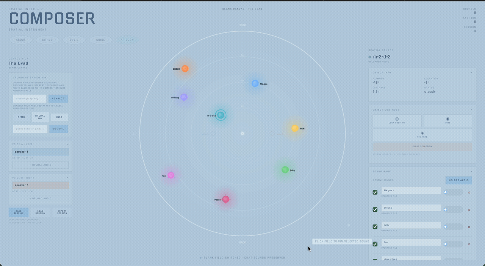

Most browser audio tools flatten space into a timeline.
Conventional DAWs are built around tracks, lanes, and left-right pan. That works for arrangement, but it collapses the feeling of multiple voices sharing a room into a narrow strip of controls.
Composer starts from a different assumption: source position is part of the composition itself. The project’s core interface is a large bird's-eye radar where every sound source is visible relative to the listener and can be selected, dragged, frozen, pinned, or muted directly in space.
"Not a timeline with panning. A field with inhabitants."

Spatial audio as interface, not post-production effect.
The project sits between web audio tooling and installation logic. Instead of treating HRTF rendering as polish applied at the end, Composer makes spatial placement the primary authoring metaphor from the first interaction.
The live system separates ambient environment from composition structure. That makes it possible to pair a mood layer with anchored conversational layouts, so the same field can work as an instrument, a staging surface, or a spatial interview room.
A radar layout backed by compositions, drift, and diarization.
Sources are positioned across a radar interface and rendered binaurally through Resonance Audio. The placement model is intentionally direct: what you see in the field is what you hear in the headphones. In ambient mode, clouds drift through the field as looping objects; in composition mode, named anchor slots define stable relational positions for voices.
Composer supports layouts like the Dyad, Council, Journal, and Interview. Each template defines azimuth, elevation, and distance slots that can be filled manually or via speaker diarization.
AssemblyAI handles speaker detection when a public audio URL or uploaded mix is ingested. Detected speakers are routed into the active composition as positioned sources. When the number of speakers exceeds the current layout, Composer offers a mismatch flow so the field can switch compositions or expand to fit.
Web-native spatial mixing with automated voice parsing.
Spatial composition becomes an editing decision much earlier.
The main lesson is that diarization is not just a transcription feature. Once each voice becomes a movable or anchorable source, analysis turns directly into arrangement. The browser stops being a playback surface and becomes a staging environment.
The larger idea in the progress notes is persistence across sessions: shared arrangements, ghost traces, and saved spatial structures that make the field feel less like a one-off mixer and more like a place you return to.